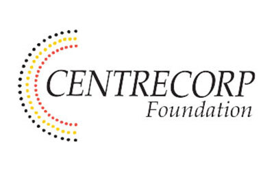

Outcomes snapshot / May 2026
Utopia Homelands Bed Delivery
Centrecorp Foundation support helped Goods on Country and A Curious Tractor deliver practical bed infrastructure into the Utopia Homelands with community partners, creating a clear evidence base for future Stretch Bed delivery, community feedback and follow-up reporting.
Prepared for Centrecorp Foundation by Goods on Country / A Curious Tractor with Oonchiumpa.
Delivered successfully on 7, 8 and 9 October 2025 with community partners.
Upcoming Stretch Bed delivery round, with new photos and stories to add after the trip.
The next round uses the current no-tools Stretch Bed model.
Recognition page now live with Centrecorp logo, photos, video and community story.
Outcome Evidence Available Now
- Delivery photos show beds arriving, parts being unpacked, community setup and beds placed for use.
- Oonchiumpa Good News Story records the partnership and reported effect for Elders Frank and Casey Holmes.
- Community voices include practical need and product feedback connected to the Central Australia pathway.
- Public acknowledgement page gives Centrecorp Foundation visible recognition and a single shareable link.
"Since receiving their new beds, they are no longer experiencing back pains."
Oonchiumpa Good News Story, sharing feedback from respected Elders Frank and Casey Holmes from Antarrengeny.What To Add After The 107-Bed Round
- Final delivery count, dates and communities/homelands reached.
- Approved photo set: delivery, assembly, beds in use and local partner involvement.
- Three to five short consent-checked voices from families, Elders and delivery partners.
- Product feedback: comfort, setup time, cleaning, repairs, missing parts and suggested changes.
- Asset register reconciliation: bed IDs, QR records, follow-up requests and maintenance notes.